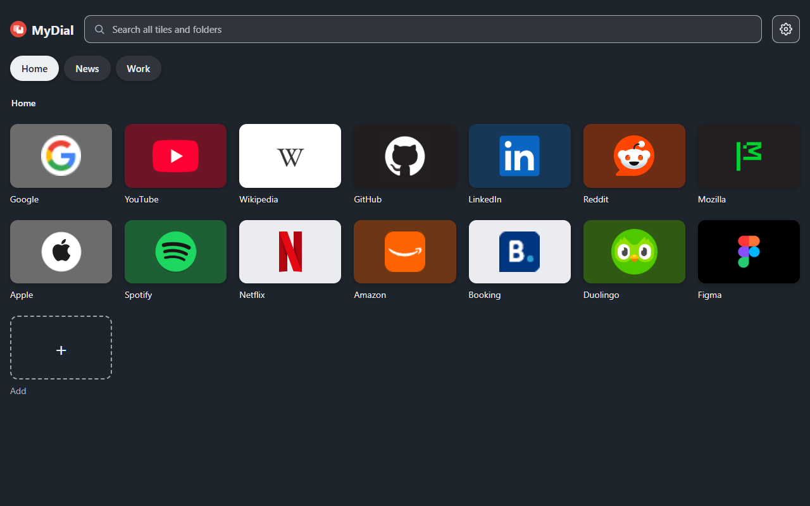

MyDial
MyDialMyDial — Speed Dial for Bookmarks
MyDial is an extension for Chrome, Edge and Brave. It shows the sites from your bookmarks bar as tiles on the new tab page.

- Tiles are your bookmarks. Change a tile and the bookmark changes, and the other way round.
- Bookmark folders become groups of tiles.
- Your own icons, tile colours, themes and background.
- Search across all tiles and folders.
- No ads, no analytics, no server. Your data stays in your browser.